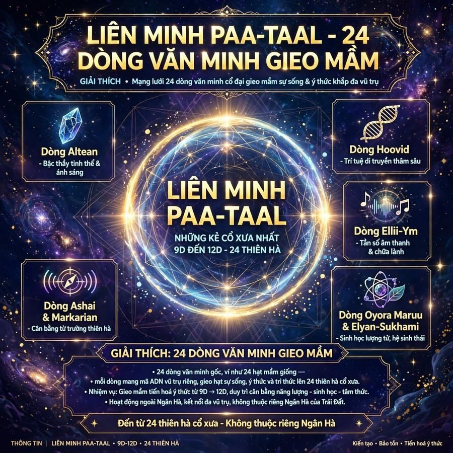
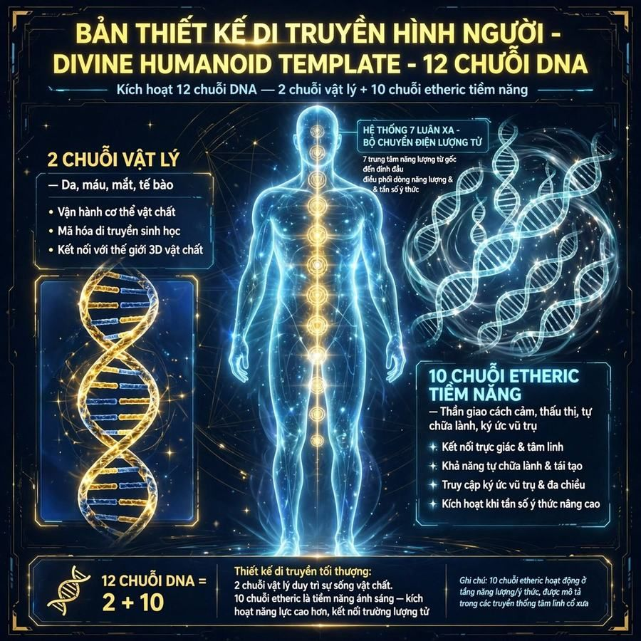
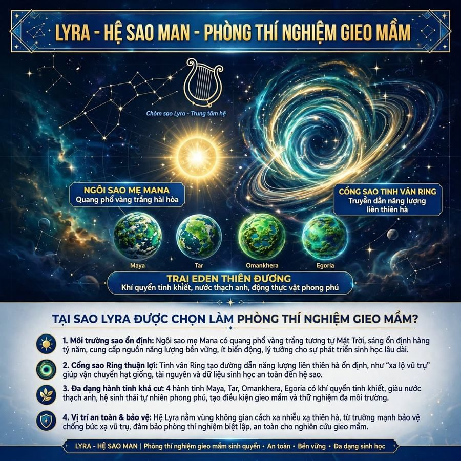
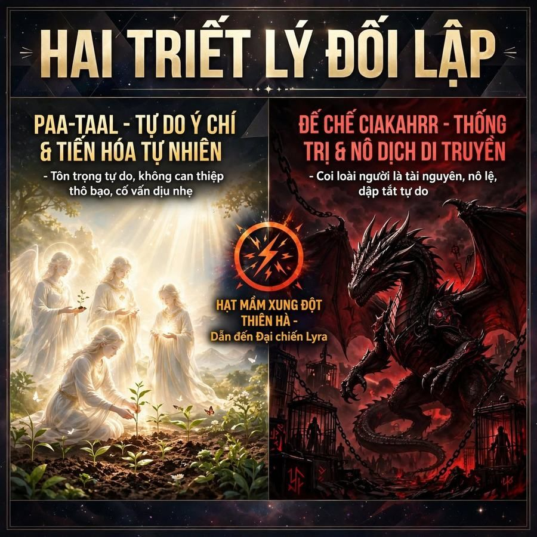
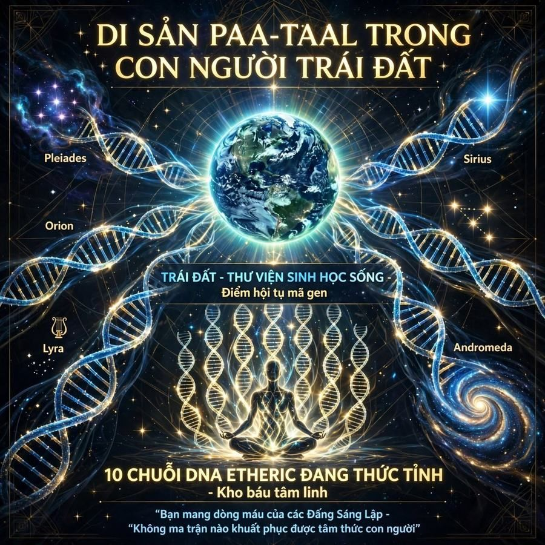

Trang chủ / Chuyên đề 1: Tiền Sử Thiên Hà / Kỳ 2
Chuyên đề 1 · Kỳ 2 / 100
LIÊN MINH PAA-TAAL (SEEDERS) & DỰ ÁN GIEO MẦM LIÊN THIÊN HÀ

Ở Kỳ 1, chúng ta đã cùng nhau quay ngược thời gian về cội nguồn nguyên thủy, giải mã bí ẩn Lăng Kính Của Lyra — nơi dải ánh sáng ý thức Toàn Thể từ Nguồn đi qua Lỗ Trắng để phân rã thành 7 dải mật độ nhận thức và kiến tạo nên cấu trúc đa chiều của dải Ngân Hà.
Nhưng sau khi vũ trụ vật lý được hình thành, những ai là kiến trúc sư đầu tiên thiết kế nên hình thái sinh học dạng người (Humanoid)? Tại sao giữa vô vàn hình thái sinh thể trong vũ trụ, thể xác con người lại sở hữu cấu trúc di truyền thiêng liêng với 12 chuỗi DNA tiềm năng? Và tổ chức huyền thoại mang tên Liên minh Paa-Taal (Nhóm 24 Đấng Sáng Lập Liên Thiên Hà) đóng vai trò lịch sử như thế nào trong Dự án Gieo mầm Đại Không gian?
Trong nền sinh học thô 3D hiện tại của Trái Đất, thuyết tiến hóa cổ điển cho rằng loài người phát triển ngẫu nhiên từ động vật linh trưởng thông qua các đột biến sinh học may rủi.
Tuy nhiên, các hồ sơ giải mật thiên hà cổ xưa khẳng định một sự thật tráng lệ hoàn toàn ngược lại: Con người không phải là sản phẩm ngẫu nhiên của tự nhiên, mà là Tuyệt tác Di truyền Liên Thiên hà (Intergalactic Genetic Masterpiece) do các Đấng Sáng Lập cổ xưa nhất vũ trụ tâm huyết khởi xướng!
Hãy cùng dấn thân vào hành trình khám phá Kỳ 2: Liên Minh Paa-Taal & Dự Án Gieo Mầm Liên Thiên Hà để giải mã cội nguồn di truyền thiêng liêng nhất của gia đình loài người!
✦ ✦ ✦1. LIÊN MINH PAA-TAAL LÀ AI? NHỮNG KIẾN TRÚC SƯ CỔ XƯA NGOÀI THIÊN HÀ
Trong cổ ngữ thiên hà, từ "Paa-Taal" có nghĩa là "Những Kẻ Cổ Xưa Nhất" hoặc "Các Đấng Sáng Lập Khởi Nguyên".
A. Bản chất Siêu chiều của Nhóm Paa-Taal
- Xuất thân Liên Thiên hà (Intergalactic Origin): Nhóm Paa-Taal không thuộc về riêng dải Ngân Hà của chúng ta. Họ là tập thể liên minh gồm các sinh mệnh trí tuệ đến từ 24 thiên hà cổ xưa khác nhau trong Đa Vũ trụ (như Thiên hà Tiên Nữ, Thiên hà Tam Giác và các dải ngân hà nguyên thủy khởi sinh).
- Trạng thái Năng lượng Siêu chiều (9D – 12D): Các Đấng Sáng Lập Paa-Taal vận hành ở dải mật độ tâm thức từ 9D đến 12D. Họ không có thể xác sinh học hữu hình cố định như các chủng tộc 3D hay 5D. Họ tồn tại dưới dạng những Tập thể Ý thức Ánh sáng Thuần khiết (Mass Conscious Light Entities), có khả năng biến đổi hình thái, kiến tạo nên các thiên thể và điều khiển sự ngưng tụ của các nguyên tố vật lý bằng năng lượng tư tưởng.
B. Nhóm 24 Văn minh Gieo mầm (The 24 Founder Races)
Liên minh Paa-Taal bao gồm 24 dòng văn minh sáng lập tiêu biểu, trong đó có các nhánh huyền thoại như:
- Dòng Altean: Bậc thầy về công nghệ tinh thể, ánh sáng và kiến trúc tâm linh siêu chiều.
- Dòng Hoovid: Chủng tộc nhỏ bé về hình thể nhưng sở hữu trí tuệ di truyền và năng lượng tâm thức vô cùng thâm sâu.
- Dòng Ellii-Ym: Bậc thầy về tần số âm thanh, sự cộng hưởng sóng dừng và chữa lành trường năng lượng.
- Dòng Oyora Maruu & Elyan-Sukhami: Các nhà sinh học lượng tử chuyên thiết kế hệ sinh thái thảo mộc và động vật cho các hành tinh sơ khai.
- Dòng Ashai & Markarian: Các tư vấn viên tâm thức đóng vai trò giữ gìn sự cân bằng từ trường cho các cánh tay xoắn thiên hà.

2. BẢN THIẾT KẾ DI TRUYỀN HÌNH NGƯỜI TỐI THƯỢNG (THE DIVINE HUMANOID TEMPLATE)
Trước khi dự án gieo mầm được triển khai, Liên minh Paa-Taal đã họp bàn để giải quyết một bài toán vũ trụ hóc húa: Làm thế nào để một phân mảnh ý thức từ Nguồn có thể hạ nhập sâu vào dải mật độ vật lý thô (3D/4D) mà không bị mất kết nối tâm linh vĩnh viễn, đồng thời có thể chịu đựng được sự biến động từ trường của các môi trường hành tinh khắc nghiệt?
Để giải quyết bài toán này, nhóm Paa-Taal đã sáng tạo ra Bản thiết kế Di truyền Hình người Tối thượng (The Divine Humanoid Matrix).
A. Cấu trúc Hình thái Hình Người (Humanoid Physiology)
- Tính Đối xứng Tỷ lệ Vàng: Thể xác dạng người với cấu trúc đứng thẳng, hai tay, hai chân, cột sống làm trục dẫn truyền năng lượng trung tâm và đầu chứa bộ não - tuyến tùng ở vị trí thượng đỉnh. Cấu trúc này mô phỏng chính xác hình học thiêng liêng của Cây Vũ Trụ (Tree of Life).
- Trục Kinh mạch & Hệ thống 7 Luân xa: Thể xác dạng người được tích hợp hệ thống 7 luân xa chính kết nối với ống năng lượng trung tâm running dọc cột sống. Cấu trúc này đóng vai trò như một bộ chuyển điện lượng tử (Quantum Transformer), giúp hạ tần số năng lượng từ thể linh hồn siêu chiều xuống để điều khiển thể xác vật lý thô mà không làm cháy nổ tế bào.
B. Mật mã 12 Chuỗi DNA Tiềm năng (12-Strand DNA Potential)
Khác với góc nhìn khoa học thô vốn chỉ nhìn thấy 2 chuỗi DNA cuộn kép vật lý và coi phần còn lại là không có chức năng, bản thiết kế gốc của Paa-Taal tích hợp 12 chuỗi DNA đa chiều:
- 2 Chuỗi Vật lý (Physical Strands): Điều khiển các đặc tính sinh học thô, nhóm máu, màu da, màu mắt và sự phân chia tế bào.
- 10 Chuỗi Etheric Tiềm năng (Multidimensional Strands): Chứa đựng các mã khóa kích hoạt giác quan siêu chiều: thần giao cách cảm, thấu thị, dịch chuyển vật chất, khả năng du hành thể phách, sự tự chữa lành hoàn hảo và ký ức lịch sử vũ trụ.

3. TẠI SAO CHÒM SAO LYRA (HỆ SAO MAN) ĐƯỢC CHỌN LÀM "PHÒNG THÍ NGHIỆM GIEO MẦM"?
Sau khi hoàn thiện Bản thiết kế Di truyền Hình người Tối thượng, Liên minh Paa-Taal cần chọn một địa điểm lý tưởng trong dải Ngân Hà để tiến hành gieo mầm và nuôi dưỡng các thế hệ người đầu tiên.
Địa điểm được lựa chọn chính là Hệ sao Man (Kepler-62) nằm trong chòm sao Lyra (Thiên Cầm).
A. Lý do Chiến lược Năng lượng & Tọa độ Thiên văn
- Ngôi sao Mẹ Mana trù phú: Hệ sao Man quay xung quanh ngôi sao mẹ Mana — một ngôi sao phát ra quang phổ năng lượng vàng-trắng dịu nhẹ, chứa dải tần số vô cùng hài hòa cho sự phát triển tế bào sinh học.
- Vị trí Giao thoa Cổng Sao Tinh vân Ring: Hệ sao Man nằm ngay sát Cổng Xoáy không-thời gian siêu lớn tại Tinh vân Ring. Vị trí này giúp các Đấng Sáng Lập Paa-Taal dễ dàng truyền dẫn dải sóng năng lượng từ các thiên hà gốc xuống để giám sát và hỗ trợ dự án gieo mầm.
- Môi trường Sinh thái Thiên đường: Các hành tinh thuộc hệ sao Man (như Maya, Tar, Omankhera, Egoria) được các Paa-Taal kiến tạo nên bầu khí quyển tinh khiết, nguồn nước chứa hàm lượng thạch anh tự nhiên và hệ động thực vật phong phú, biến nơi đây thành một "Trại Eden Thiên đường" nguyên thủy của dải Ngân Hà.

4. TRIẾT LÝ GIEO MẦM CỦA PAA-TAAL VS TƯ TƯỞNG CỦA ĐẾ CHẾ BÒ SÁT DRACO
Sự xuất hiện của Dự án Gieo mầm Paa-Taal tại Lyra cũng đồng thời làm nổi bật sự khác biệt sâu sắc về triết lý giữa hai thế lực lớn nhất trong lịch sử thiên hà.
A. Triết lý Gieo mầm của Liên minh Paa-Taal: "Tự Do Ý Chí & Tiến Hóa Tự Nhiên"
- Tôn trọng Tự do Ý chí tuyệt đối: Các Đấng Sáng Lập Paa-Taal không coi các sinh mệnh do họ tạo ra là "nô lệ" hay "tài sản". Họ trao cho loài người quyền tự do lựa chọn, tự do khám phá và tự do tiến hóa theo nhịp độ riêng.
- Không Can thiệp Thô bạo (Law of Non-Interference): Khi loài người Lyra phát triển, các Paa-Taal lùi về bước đệm phía sau đóng vai trò như những người quan sát, cố vấn tâm linh dịu nhẹ chứ không áp đặt sự thờ phụng độc đoán.
B. Sự Tương phản với Triết lý Đế chế Bò sát Ciakahrr (Draconian)
- Tư tưởng Thống trị & Nô dịch Di truyền: Ngược lại với Paa-Taal, chủng tộc Bò sát cổ đại Ciakahrr (Alpha Draconians — vốn được gieo mầm theo một mô hình cực tính khác) tin rằng họ là chủng tộc thượng đẳng duy nhất có quyền làm chủ toàn bộ Ngân Hà.
- Coi các Chủng tộc khác là Tài nguyên: Phe Ciakahrr xem các chủng tộc hình người là nguồn lực lao động thô, nguồn thức ăn sinh học hoặc các thực thể cần phải bị dập tắt tư duy tự do để phục vụ cho sự bành trướng của Đế chế.
- Hạt mầm Xung đột Thiên hà: Chính sự đối lập triệt để giữa Triết lý Tự do của Paa-Taal và Tư tưởng Thống trị của Ciakahrr đã trở thành ngọn nguồn dẫn đến Cuộc đại chiến Lyra tàn khốc sau này!

5. DI SẢN PAA-TAAL TRONG MÃ DI TRUYỀN CON NGƯỜI TRÁI ĐẤT NGÀY NAY
Cuộc chiến Lyra có thể đã phá hủy nôi tổ tiên tại hệ sao Man và đẩy loài người vào Cuộc Đại Di Cư, nhưng Dự án Gieo mầm của Paa-Taal chưa bao giờ thất bại!
A. Trái Đất — Thư viện Sinh học Sống (Living Genetic Library)
- Trong suốt hàng tỷ năm di cư qua Pleiades, Sirius, Orion và Andromeda, bản thiết kế 12 chuỗi DNA nguyên thủy của Paa-Taal đã được mang theo và bảo tồn.
- Cuối cùng, Trái Đất (Terra) đã được chọn làm điểm hội tụ tối thượng: Nơi mà các mã di truyền từ các nhánh di cư của Paa-Taal được tích hợp trở lại vào bộ gen con người Trái Đất!
B. Sự Thức tỉnh Mã Di truyền trong Kỷ nguyên Mới
- Bạn mang Dòng máu của các Đấng Sáng Lập: Mỗi con người Trái Đất hiện nay đều chứa đựng mầm mống di truyền thiêng liêng do các Đấng Paa-Taal thiết kế. 10 chuỗi DNA Etheric đang bị đóng băng của bạn chính là "kho báu tâm linh" đang chờ được kích hoạt.
- Khả năng Vượt qua Ma trận 3D: Vì bộ gen con người được thiết kế với tiềm năng kết nối thẳng về Nguồn, không một máy tính hay công nghệ ma trận phong tỏa nào có thể khuất phục vĩnh viễn tâm thức con người khi mã gen Paa-Taal được bừng sáng!

6. LỜI KẾT KỲ 2: LÒNG BIẾT ƠN VỚI CỘI NGUỒN VŨ TRỤ
Hiểu về Liên Minh Paa-Taal & Dự Án Gieo Mầm Liên Thiên Hà giúp chúng ta nâng cao lòng tự tôn tâm linh sâu sắc:
- Ngừng coi thường Bản thể Con người: Đừng bao giờ nghĩ rằng con người nhỏ bé, yếu ớt hay tầm thường. Thể xác và tâm thức bạn là tác phẩm nghệ thuật đỉnh cao kết tinh từ trí tuệ của 24 nền văn minh cổ xưa nhất Vũ trụ!
- Sống xứng đáng với Tự do Ý chí: Hãy trân trọng quyền tự do lựa chọn, sống trong tình yêu thương, sự từ bi và trách nhiệm bảo vệ sự sống. Đó chính là cách tốt nhất để tri ân các Đấng Sáng Lập Paa-Taal đã gieo mầm cho chúng ta!